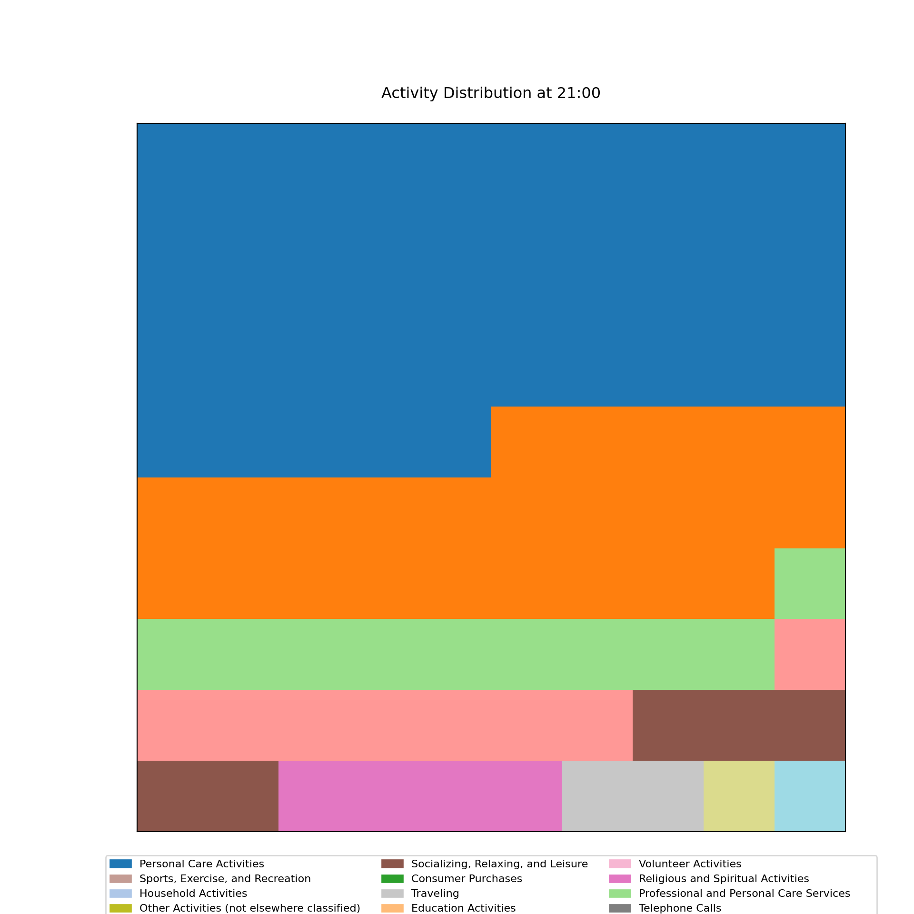
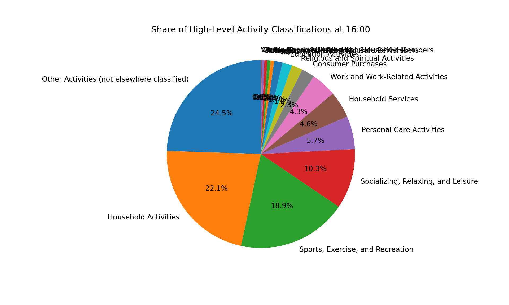

Why not a pie chart?
I saw on LinkedIn recently a post suggesting that a flashy animated graphic might not be the best way to convey information.
The graphic being critiqued was a classic chart by Nathan Yau from Flowing Data. The animated chart shows the distribution of activities across the day.
Have a gander below:
What I really like about this chart is that it shows the distribution of activities across the day, and cleverly captures the transitions between different activities with the ‘traveling’ category in the center.
I wanted to see how hard it would be to convey the same information in a static manner - inspired by the post from David Kirk.
Setup
I conducted the analysis in Python for speed of being able to ask ChatGPT to munge the data, but the same could be done in R.
Here we read in the data from The American Time Use Survey (ATUS) from the Bureau of Labor Statistics. The data is a detailed account of how people spend their time.
Code
# code-folding: false
import pandas as pd
import matplotlib.pyplot as plt
import matplotlib.patches as mpatches
import matplotlib.cm as cm
import numpy as np
# Read the data
file_path = "data/atusact-2023/atusact_2023.dat"
# Define the column names based on the order in the Stata code
column_names = [
"tucaseid", "tuactivity_n", "tewhere", "trtcctot_ln", "trtcc_ln", "trtcoc_ln",
"trtec_ln", "trthh_ln", "trtnohh_ln", "trtohh_ln", "trtonhh_ln", "trto_ln",
"tuactdur", "tuactdur24", "tucc5", "tucc5b", "tucc7", "tucc8", "tucumdur",
"tucumdur24", "tudurstop", "tuec24", "tustarttim", "tustoptime", "tutier1code",
"tutier2code", "tutier3code", "trcode", "trtier2", "txwhere"
]
# Read the data with all columns as strings to avoid type issues
df = pd.read_csv(file_path, delimiter=',', names=column_names, dtype=str, skiprows=1)
# Create a new variable for the two-digit (high-level) activity classifications from 'trcode'
df['activity_classification'] = df['trcode'].astype(str).str[:2]
# Define a mapping for the two-digit activity classifications
activity_classification_map = {
"01": "Personal Care Activities",
"02": "Household Activities",
"03": "Work and Work-Related Activities",
"04": "Education Activities",
"05": "Consumer Purchases",
"06": "Professional and Personal Care Services",
"07": "Household Services",
"08": "Caring For and Helping Household Members",
"09": "Caring For and Helping Non-Household Members",
"10": "Working and Volunteering",
"11": "Socializing, Relaxing, and Leisure",
"12": "Sports, Exercise, and Recreation",
"13": "Religious and Spiritual Activities",
"14": "Volunteer Activities",
"15": "Telephone Calls",
"16": "Traveling",
"18": "Other Activities (not elsewhere classified)"
}
# Map the two-digit classification to descriptive labels
df['activity_classification_label'] = df['activity_classification'].map(activity_classification_map)Area Chart
Here I attempt an area chart to show the distribution of activities across the day.
We have time on the x-axis and the share of individuals doing one of 17 activities on the y-axis.
It is somewhat difficult to interpret, as the categories close to each other are hard to distinguish, even with a few different colors from the viridis colormap.
Code
# Create an empty DataFrame to store the counts for each hour and activity classification
activity_distribution = pd.DataFrame(index=range(24), columns=activity_classification_map.values()).fillna(0)
# Populate the DataFrame with counts for each hour
for hour in range(24):
# Filter the data for each hour
start_time = f"{hour:02}:00:00"
end_time = f"{hour:02}:59:59"
df_hour = df[(df['tustarttim'] >= start_time) & (df['tustarttim'] <= end_time)]
# Count the occurrences of each activity classification for the hour
hour_counts = df_hour['activity_classification_label'].value_counts()
# Fill the DataFrame with the counts
for activity, count in hour_counts.items():
activity_distribution.at[hour, activity] = count
# Normalize the data by row to get percentages
activity_distribution = activity_distribution.div(activity_distribution.sum(axis=1), axis=0).fillna(0)
# Plot the area chart with increased width and legend adjustments
plt.figure(figsize=(18, 8)) # Increase width to give more space for x-axis labels
# activity_distribution.plot.area(stacked=True, cmap='tab20', alpha=0.7)
activity_distribution.plot.area(stacked=True, cmap=cm.get_cmap('viridis', len(activity_classification_map)), alpha=0.7)
plt.xlabel('Hour of the Day')
plt.ylabel('Share of Activities')
plt.title('Distribution of Activity Classifications Across Each Hour of the Day')
# Adjust the legend to have fewer columns and more rows, and place it below the chart
plt.legend(loc='upper center', bbox_to_anchor=(0.5, -0.3), ncol=2, fontsize='small')
plt.xticks(range(0, 24))([<matplotlib.axis.XTick object at 0x16859f0b0>, <matplotlib.axis.XTick object at 0x17bc88d40>, <matplotlib.axis.XTick object at 0x168520800>, <matplotlib.axis.XTick object at 0x168520f50>, <matplotlib.axis.XTick object at 0x17bdb41d0>, <matplotlib.axis.XTick object at 0x17bdb4b30>, <matplotlib.axis.XTick object at 0x17bd27e00>, <matplotlib.axis.XTick object at 0x16f522a80>, <matplotlib.axis.XTick object at 0x17bddaa20>, <matplotlib.axis.XTick object at 0x17bddb380>, <matplotlib.axis.XTick object at 0x17bc88da0>, <matplotlib.axis.XTick object at 0x17bd24710>, <matplotlib.axis.XTick object at 0x17bd24ef0>, <matplotlib.axis.XTick object at 0x17bd25760>, <matplotlib.axis.XTick object at 0x17bd25f70>, <matplotlib.axis.XTick object at 0x17bd268a0>, <matplotlib.axis.XTick object at 0x17bd25a90>, <matplotlib.axis.XTick object at 0x17bd24a70>, <matplotlib.axis.XTick object at 0x17bdda6c0>, <matplotlib.axis.XTick object at 0x17bdd9be0>, <matplotlib.axis.XTick object at 0x17bddbfe0>, <matplotlib.axis.XTick object at 0x17bdda2a0>, <matplotlib.axis.XTick object at 0x17be007a0>, <matplotlib.axis.XTick object at 0x17be010a0>], [Text(0, 0, '0'), Text(1, 0, '1'), Text(2, 0, '2'), Text(3, 0, '3'), Text(4, 0, '4'), Text(5, 0, '5'), Text(6, 0, '6'), Text(7, 0, '7'), Text(8, 0, '8'), Text(9, 0, '9'), Text(10, 0, '10'), Text(11, 0, '11'), Text(12, 0, '12'), Text(13, 0, '13'), Text(14, 0, '14'), Text(15, 0, '15'), Text(16, 0, '16'), Text(17, 0, '17'), Text(18, 0, '18'), Text(19, 0, '19'), Text(20, 0, '20'), Text(21, 0, '21'), Text(22, 0, '22'), Text(23, 0, '23')])Code
plt.tight_layout()
plt.show()The original maker of the chart used a faceted approach to show the distribution of activities across the day, instead of a stacked area chart. This approach might be more effective in conveying the information.
Here are some other options for colormaps that might make the chart easier to interpret:
Option 1: tab20c (a balanced colormap for categorically distinct colors)
Code
# Plot the area chart with increased width and updated colors
plt.figure(figsize=(18, 8))
activity_distribution.plot.area(stacked=True, cmap='tab20c', alpha=0.7)
plt.xlabel('Hour of the Day')
plt.ylabel('Share of Activities')
plt.title('Distribution of Activity Classifications Across Each Hour of the Day')
# Adjust the legend to have fewer columns and more rows, and place it below the chart
plt.legend(loc='upper center', bbox_to_anchor=(0.5, -0.3), ncol=2, fontsize='small')
plt.xticks(range(0, 24))([<matplotlib.axis.XTick object at 0x17be24380>, <matplotlib.axis.XTick object at 0x17be27950>, <matplotlib.axis.XTick object at 0x17be24ef0>, <matplotlib.axis.XTick object at 0x17bc88f20>, <matplotlib.axis.XTick object at 0x17fa98fe0>, <matplotlib.axis.XTick object at 0x17fa998e0>, <matplotlib.axis.XTick object at 0x17fa9a1b0>, <matplotlib.axis.XTick object at 0x17bd25550>, <matplotlib.axis.XTick object at 0x17fa33050>, <matplotlib.axis.XTick object at 0x17fac9910>, <matplotlib.axis.XTick object at 0x17faca240>, <matplotlib.axis.XTick object at 0x17facabd0>, <matplotlib.axis.XTick object at 0x17facb4a0>, <matplotlib.axis.XTick object at 0x17faca7b0>, <matplotlib.axis.XTick object at 0x17fac8e60>, <matplotlib.axis.XTick object at 0x17faf4590>, <matplotlib.axis.XTick object at 0x17faf4e30>, <matplotlib.axis.XTick object at 0x17faf57c0>, <matplotlib.axis.XTick object at 0x17faca3f0>, <matplotlib.axis.XTick object at 0x17fa33080>, <matplotlib.axis.XTick object at 0x17fa61520>, <matplotlib.axis.XTick object at 0x17fa63b60>, <matplotlib.axis.XTick object at 0x17fa624e0>, <matplotlib.axis.XTick object at 0x17fa62cf0>], [Text(0, 0, '0'), Text(1, 0, '1'), Text(2, 0, '2'), Text(3, 0, '3'), Text(4, 0, '4'), Text(5, 0, '5'), Text(6, 0, '6'), Text(7, 0, '7'), Text(8, 0, '8'), Text(9, 0, '9'), Text(10, 0, '10'), Text(11, 0, '11'), Text(12, 0, '12'), Text(13, 0, '13'), Text(14, 0, '14'), Text(15, 0, '15'), Text(16, 0, '16'), Text(17, 0, '17'), Text(18, 0, '18'), Text(19, 0, '19'), Text(20, 0, '20'), Text(21, 0, '21'), Text(22, 0, '22'), Text(23, 0, '23')])Code
plt.tight_layout()
plt.show()
Option 2: Spectral (a diverging palette from ColorBrewer)
Code
# Plot the area chart with increased width and updated colors
plt.figure(figsize=(18, 8))
activity_distribution.plot.area(stacked=True, cmap='Spectral', alpha=0.7)
plt.xlabel('Hour of the Day')
plt.ylabel('Share of Activities')
plt.title('Distribution of Activity Classifications Across Each Hour of the Day')
# Adjust the legend to have fewer columns and more rows, and place it below the chart
plt.legend(loc='upper center', bbox_to_anchor=(0.5, -0.3), ncol=2, fontsize='small')
plt.xticks(range(0, 24))([<matplotlib.axis.XTick object at 0x17fb00560>, <matplotlib.axis.XTick object at 0x17fb016a0>, <matplotlib.axis.XTick object at 0x17fa9a060>, <matplotlib.axis.XTick object at 0x17faf66c0>, <matplotlib.axis.XTick object at 0x17faf6300>, <matplotlib.axis.XTick object at 0x17faf6e10>, <matplotlib.axis.XTick object at 0x17faf4380>, <matplotlib.axis.XTick object at 0x17fa31820>, <matplotlib.axis.XTick object at 0x17facb140>, <matplotlib.axis.XTick object at 0x17facb770>, <matplotlib.axis.XTick object at 0x17facb560>, <matplotlib.axis.XTick object at 0x17fac9a30>, <matplotlib.axis.XTick object at 0x17fb15220>, <matplotlib.axis.XTick object at 0x17fb17e90>, <matplotlib.axis.XTick object at 0x17fb17350>, <matplotlib.axis.XTick object at 0x17fb15be0>, <matplotlib.axis.XTick object at 0x17fa61cd0>, <matplotlib.axis.XTick object at 0x17fa60320>, <matplotlib.axis.XTick object at 0x17fa60920>, <matplotlib.axis.XTick object at 0x17fa61af0>, <matplotlib.axis.XTick object at 0x17fa61580>, <matplotlib.axis.XTick object at 0x17fa60440>, <matplotlib.axis.XTick object at 0x17fa62ae0>, <matplotlib.axis.XTick object at 0x17be96690>], [Text(0, 0, '0'), Text(1, 0, '1'), Text(2, 0, '2'), Text(3, 0, '3'), Text(4, 0, '4'), Text(5, 0, '5'), Text(6, 0, '6'), Text(7, 0, '7'), Text(8, 0, '8'), Text(9, 0, '9'), Text(10, 0, '10'), Text(11, 0, '11'), Text(12, 0, '12'), Text(13, 0, '13'), Text(14, 0, '14'), Text(15, 0, '15'), Text(16, 0, '16'), Text(17, 0, '17'), Text(18, 0, '18'), Text(19, 0, '19'), Text(20, 0, '20'), Text(21, 0, '21'), Text(22, 0, '22'), Text(23, 0, '23')])Code
plt.tight_layout()
plt.show()
Option 3: Set3 (a qualitative palette from ColorBrewer)
Code
# Plot the area chart with increased width and updated colors
plt.figure(figsize=(18, 8))
activity_distribution.plot.area(stacked=True, cmap='Set3', alpha=0.7)
plt.xlabel('Hour of the Day')
plt.ylabel('Share of Activities')
plt.title('Distribution of Activity Classifications Across Each Hour of the Day')
# Adjust the legend to have fewer columns and more rows, and place it below the chart
plt.legend(loc='upper center', bbox_to_anchor=(0.5, -0.3), ncol=2, fontsize='small')
plt.xticks(range(0, 24))([<matplotlib.axis.XTick object at 0x17bd26ff0>, <matplotlib.axis.XTick object at 0x17bd269c0>, <matplotlib.axis.XTick object at 0x17faf65a0>, <matplotlib.axis.XTick object at 0x17fb02030>, <matplotlib.axis.XTick object at 0x17bc896a0>, <matplotlib.axis.XTick object at 0x17bc89fa0>, <matplotlib.axis.XTick object at 0x17bc88fb0>, <matplotlib.axis.XTick object at 0x17bd25bb0>, <matplotlib.axis.XTick object at 0x17bd04320>, <matplotlib.axis.XTick object at 0x17bd052b0>, <matplotlib.axis.XTick object at 0x17bd06780>, <matplotlib.axis.XTick object at 0x17bd05580>, <matplotlib.axis.XTick object at 0x17bd06f90>, <matplotlib.axis.XTick object at 0x17bd07770>, <matplotlib.axis.XTick object at 0x17bd05460>, <matplotlib.axis.XTick object at 0x16f5c9d90>, <matplotlib.axis.XTick object at 0x17bd06030>, <matplotlib.axis.XTick object at 0x17be40380>, <matplotlib.axis.XTick object at 0x17be400b0>, <matplotlib.axis.XTick object at 0x17be41e50>, <matplotlib.axis.XTick object at 0x17be24860>, <matplotlib.axis.XTick object at 0x17be25c70>, <matplotlib.axis.XTick object at 0x17bd07c50>, <matplotlib.axis.XTick object at 0x17be24d70>], [Text(0, 0, '0'), Text(1, 0, '1'), Text(2, 0, '2'), Text(3, 0, '3'), Text(4, 0, '4'), Text(5, 0, '5'), Text(6, 0, '6'), Text(7, 0, '7'), Text(8, 0, '8'), Text(9, 0, '9'), Text(10, 0, '10'), Text(11, 0, '11'), Text(12, 0, '12'), Text(13, 0, '13'), Text(14, 0, '14'), Text(15, 0, '15'), Text(16, 0, '16'), Text(17, 0, '17'), Text(18, 0, '18'), Text(19, 0, '19'), Text(20, 0, '20'), Text(21, 0, '21'), Text(22, 0, '22'), Text(23, 0, '23')])Code
plt.tight_layout()
plt.show()
Waffle Charts
I also tried to create a waffle chart for each hour of the day to show the distribution of activities. I created a function to generate a waffle chart for a specific hour, and then looped through each hour to create the waffle charts.
Code
# Define colors for each activity type
activity_colors = {label: plt.cm.tab20(i) for i, label in enumerate(activity_classification_map.values())}
# Function to create a waffle chart for an hour
def plot_waffle_chart(activity_counts, hour):
# Calculate total squares in the waffle chart
total_squares = 100
percentages = (activity_counts / activity_counts.sum() * total_squares).round().astype(int)
# Generate grid based on rounded percentages
waffle_chart = np.zeros(total_squares, dtype=int)
idx = 0
for i, count in enumerate(percentages):
waffle_chart[idx:idx + count] = i
idx += count
waffle_chart = waffle_chart.reshape(10, 10)
# Plot waffle chart
plt.figure(figsize=(10, 10))
plt.matshow(waffle_chart, cmap=plt.cm.tab20, fignum=1)
plt.xticks([])
plt.yticks([])
plt.title(f'Activity Distribution at {hour:02}:00', pad=20)
# Add legend below
patches = [mpatches.Patch(color=activity_colors[label], label=label) for label in activity_counts.index]
plt.legend(handles=patches, loc='lower center', bbox_to_anchor=(0.5, -0.15), ncol=3, fontsize='small')
plt.show()
# Loop through each hour of the day and create a waffle chart
for hour in range(24):
# Format the hour to match HH:MM:SS (e.g., 07:00:00 for 7 AM)
start_time = f"{hour:02}:00:00"
end_time = f"{hour:02}:59:59"
# Filter the data for the specific hour
df_hour = df[(df['tustarttim'] >= start_time) & (df['tustarttim'] <= end_time)]
# Count the occurrences of each high-level activity classification during this hour
activity_counts = df_hour['activity_classification_label'].value_counts()
# Only plot if there is data for the given hour
if not activity_counts.empty:
plot_waffle_chart(activity_counts, hour)
else:
print(f"No activities recorded at {hour:02}:00")

Pie Charts
Similarly, I tried to create pie charts for each hour of the day to show the distribution of activities. I looped through each hour and created a pie chart for the activity distribution during that hour.
The pie charts are a real mess! It is hard to compare the distribution of activities across different hours, and the labels are overlapping.
Code
# Loop through each hour of the day (0 to 23)
for hour in range(24):
# Format the hour to match HH:MM:SS (e.g., 07:00:00 for 7 AM)
start_time = f"{hour:02}:00:00"
end_time = f"{hour:02}:59:59"
# Filter the data for the specific hour
df_hour = df[(df['tustarttim'] >= start_time) & (df['tustarttim'] <= end_time)]
# Count the occurrences of each high-level activity classification during this hour
activity_counts = df_hour['activity_classification_label'].value_counts()
# Only plot if there is data for the given hour
if not activity_counts.empty:
# Plot the pie chart
plt.figure(figsize=(10, 6))
plt.pie(activity_counts, labels=activity_counts.index, autopct='%1.1f%%', startangle=90)
plt.title(f'Share of High-Level Activity Classifications at {hour:02}:00')
plt.show()
else:
print(f"No activities recorded at {hour:02}:00")
